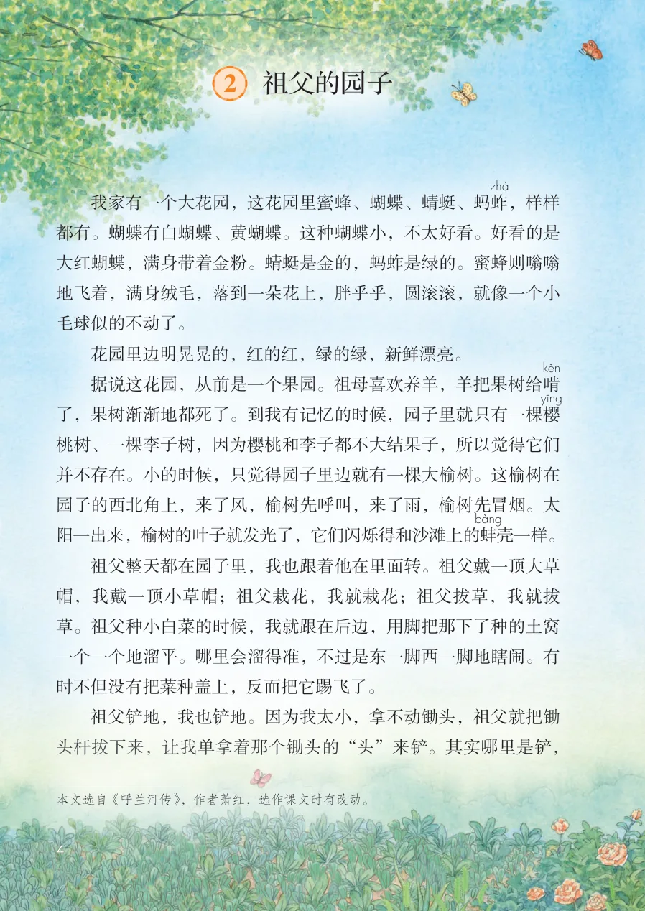
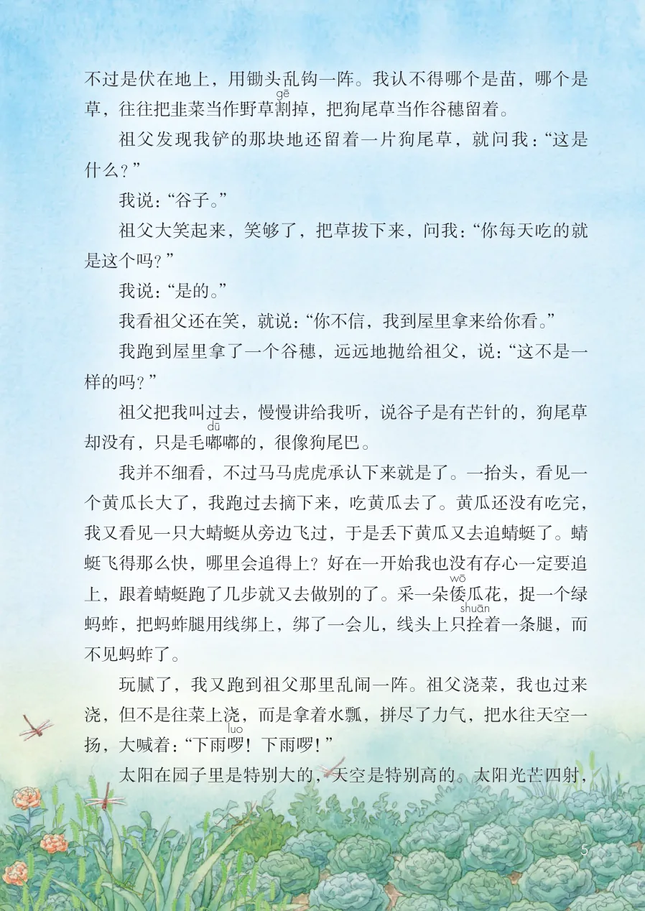
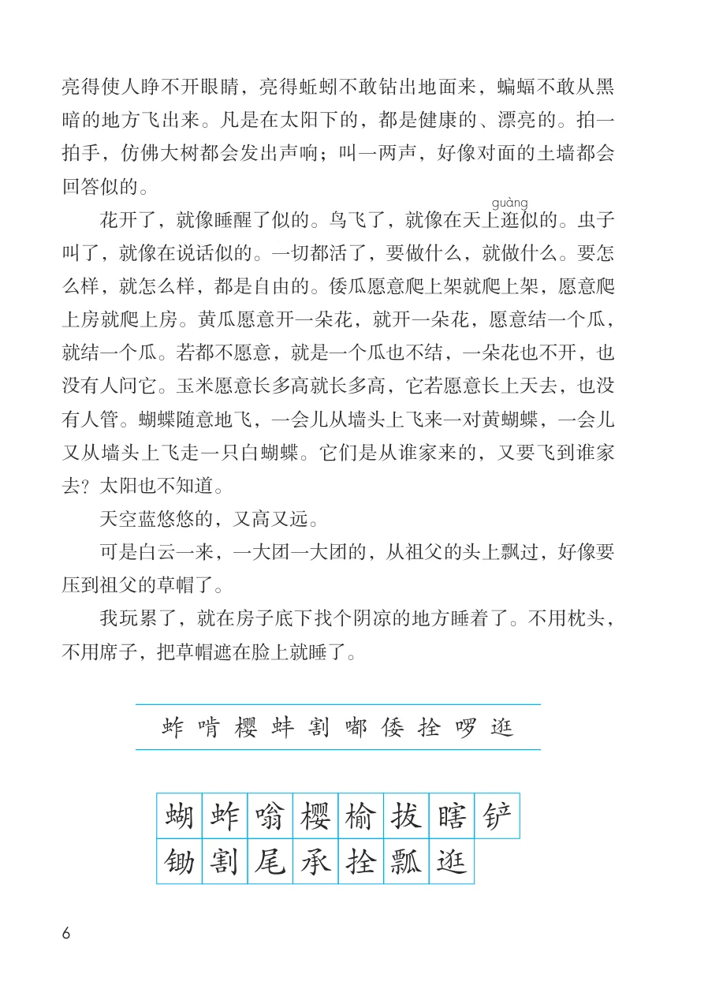
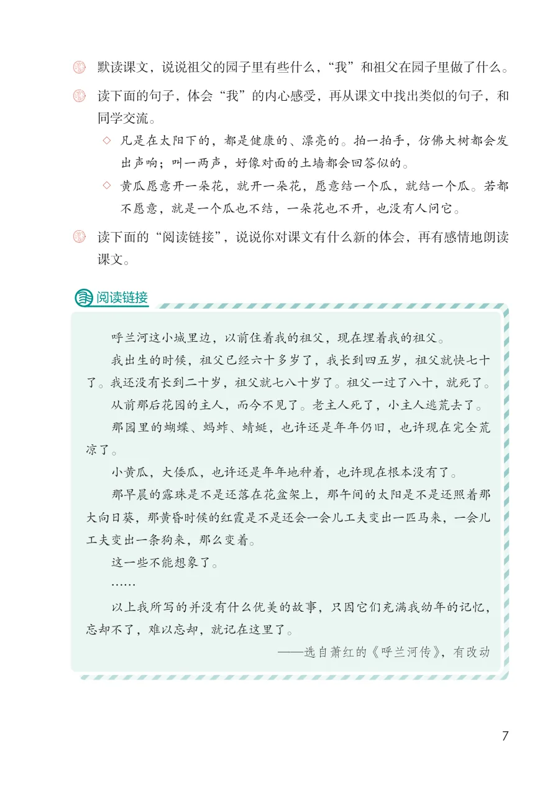

展开章节菜单
2 祖父的园子
我家有一个大花园，这花园里蜜蜂、蝴蝶、蜻蜓、蚂蚱
，样样都有。蝴蝶有白蝴蝶、黄蝴蝶。这种蝴蝶小，不太好看。好看的是大红蝴蝶，满身带着金粉。蜻蜓是金的，蚂蚱是绿的。蜜蜂则嗡嗡地飞着，满身绒毛，落到一朵花上，胖乎乎，圆滚滚，就像一个小毛球似的不动了。
花园里边明晃晃的，红的红，绿的绿，新鲜漂亮。
据说这花园，从前是一个果园。祖母喜欢养羊，羊把果树给啃了，果树渐渐地都死了。到我有记忆的时候，园子里就只有一棵樱桃树、一棵李子树，因为樱桃和李子都不大结果子，所以觉得它们并不存在。小的时候，只觉得园子里边就有一棵大榆树。这榆树在园子的西北角上，来了风，榆树先呼叫，来了雨，榆树先冒烟。太阳一出来，榆树的叶子就发光了，它们闪烁得和沙滩上的蚌
壳一样。
祖父整天都在园子里，我也跟着他在里面转。祖父戴一顶大草帽，我戴一顶小草帽；祖父栽花，我就栽花；祖父拔草，我就拔草。祖父种小白菜的时候，我就跟在后边，用脚把那下了种的土窝一个一个地溜平。哪里会溜得准，不过是东一脚西一脚地瞎闹。有时不但没有把菜种盖上，反而把它踢飞了。
祖父铲地，我也铲地。因为我太小，拿不动锄头，祖父就把锄头杆拔下来，让我单拿着那个锄头的“头”来铲。其实哪里是铲，
查看教材原页（保留全部图片、注音与原始排版）

不过是伏在地上，用锄头乱钩一阵。我认不得哪个是苗，哪个是
草，往往把韭菜当作野草割
掉，把狗尾草当作谷穗留着。
祖父发现我铲的那块地还留着一片狗尾草，就问我：“这是
什么？”
我说：“谷子。”
祖父大笑起来，笑够了，把草拔下来，问我：“你每天吃的就
是这个吗？”
我说：“是的。”
我看祖父还在笑，就说：“你不信，我到屋里拿来给你看。”
我跑到屋里拿了一个谷穗，远远地抛给祖父，说：“这不是一
样的吗？”
祖父把我叫过去，慢慢讲给我听，说谷子是有芒针的，狗尾草
却没有，只是毛嘟
嘟的，很像狗尾巴。
我并不细看，不过马马虎虎承认下来就是了。一抬头，看见一
个黄瓜长大了，我跑过去摘下来，吃黄瓜去了。黄瓜还没有吃完，
我又看见一只大蜻蜓从旁边飞过，于是丢下黄瓜又去追蜻蜓了。蜻
蜓飞得那么快，哪里会追得上？好在一开始我也没有存心一定要追
上，跟着蜻蜓跑了几步就又去做别的了。采一朵倭
瓜花，捉一个绿
着一条腿，而
蚂蚱，把蚂蚱腿用线绑上，绑了一会儿，线头上只拴
不见蚂蚱了。
玩腻了，我又跑到祖父那里乱闹一阵。祖父浇菜，我也过来
浇，但不是往菜上浇，而是拿着水瓢，拼尽了力气，把水往天空一
扬，大喊着：“下雨啰
！下雨啰！”
太阳在园子里是特别大的，天空是特别高的。太阳光芒四射，
查看教材原页（保留全部图片、注音与原始排版）

亮得使人睁不开眼睛，亮得蚯蚓不敢钻出地面来，蝙蝠不敢从黑暗的地方飞出来。凡是在太阳下的，都是健康的、漂亮的。拍一拍手，仿佛大树都会发出声响；叫一两声，好像对面的土墙都会回答似的。
花开了，就像睡醒了似的。鸟飞了，就像在天上逛
似的。虫子叫了，就像在说话似的。一切都活了，要做什么，就做什么。要怎么样，就怎么样，都是自由的。倭瓜愿意爬上架就爬上架，愿意爬上房就爬上房。黄瓜愿意开一朵花，就开一朵花，愿意结一个瓜，就结一个瓜。若都不愿意，就是一个瓜也不结，一朵花也不开，也没有人问它。玉米愿意长多高就长多高，它若愿意长上天去，也没有人管。蝴蝶随意地飞，一会儿从墙头上飞来一对黄蝴蝶，一会儿又从墙头上飞走一只白蝴蝶。它们是从谁家来的，又要飞到谁家去？太阳也不知道。
天空蓝悠悠的，又高又远。
可是白云一来，一大团一大团的，从祖父的头上飘过，好像要压到祖父的草帽了。
我玩累了，就在房子底下找个阴凉的地方睡着了。不用枕头，不用席子，把草帽遮在脸上就睡了。
查看教材原页（保留全部图片、注音与原始排版）

默读课文，说说祖父的园子里有些什么，“我”和祖父在园子里做了什么。
出声响；叫一两声，好像对面的土墙都会回答似的。
不愿意，就是一个瓜也不结，一朵花也不开，也没有人问它。
课文。
呼兰河这小城里边，以前住着我的祖父，现在埋着我的祖父。
我出生的时候，祖父已经六十多岁了，我长到四五岁，祖父就快七十
了。我还没有长到二十岁，祖父就七八十岁了。祖父一过了八十，就死了。
从前那后花园的主人，而今不见了。老主人死了，小主人逃荒去了。
那园里的蝴蝶、蚂蚱、蜻蜓，也许还是年年仍旧，也许现在完全荒
凉了。
小黄瓜，大倭瓜，也许还是年年地种着，也许现在根本没有了。
那早晨的露珠是不是还落在花盆架上，那午间的太阳是不是还照着那
大向日葵，那黄昏时候的红霞是不是还会一会儿工夫变出一匹马来，一会儿
工夫变出一条狗来，那么变着。
这一些不能想象了。
……
以上我所写的并没有什么优美的故事，只因它们充满我幼年的记忆，
忘却不了，难以忘却，就记在这里了。
查看教材原页（保留全部图片、注音与原始排版）
